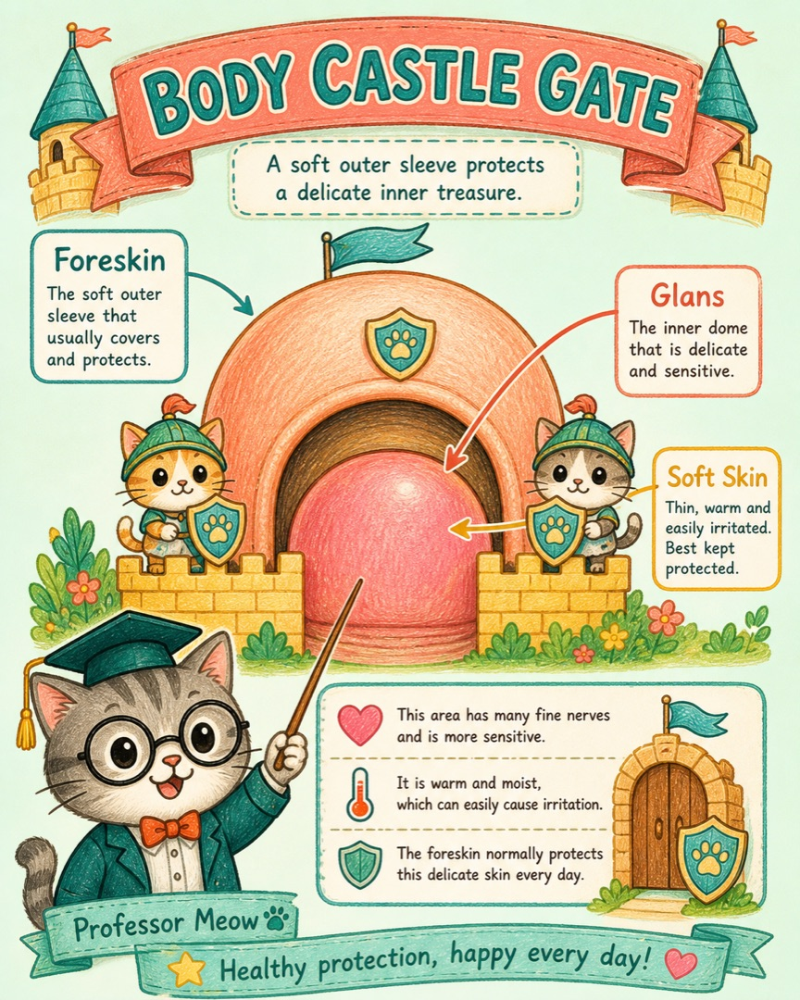
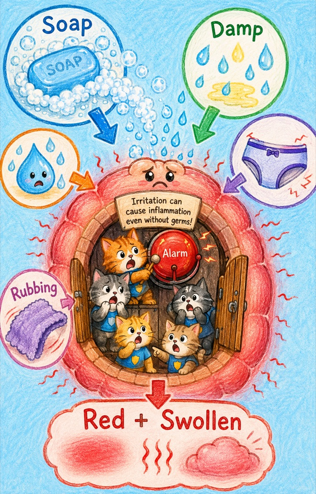
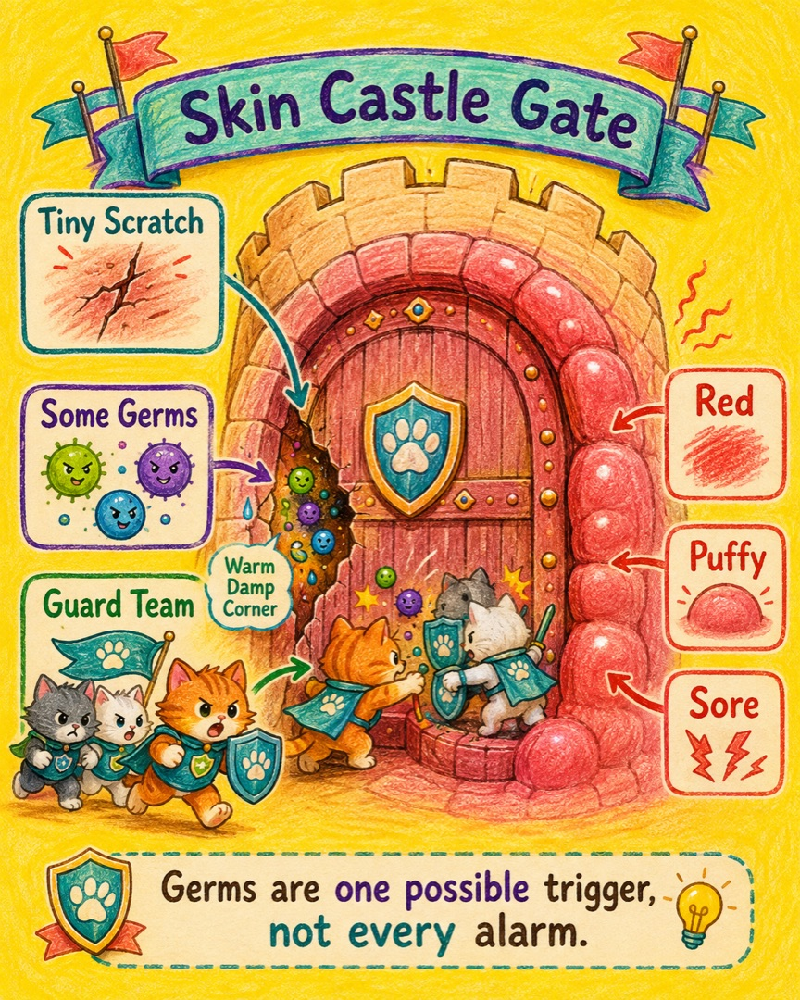
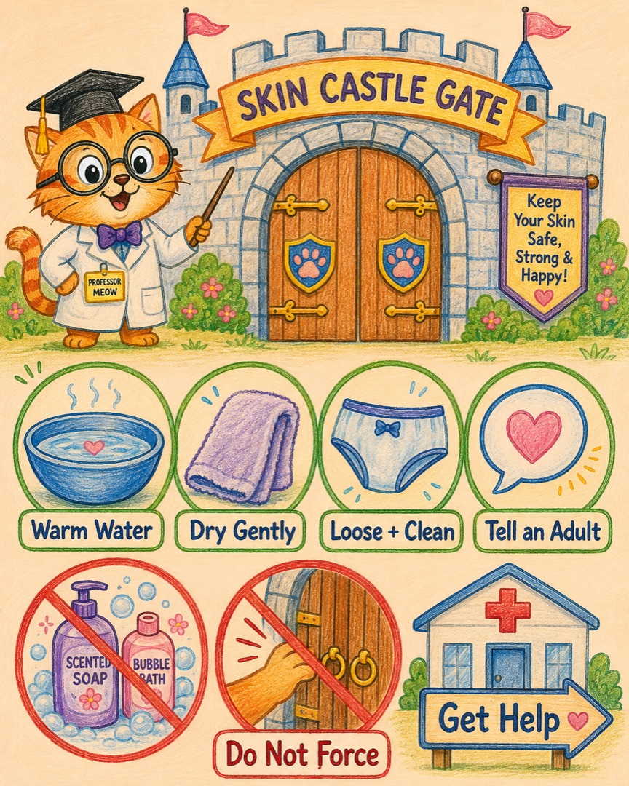
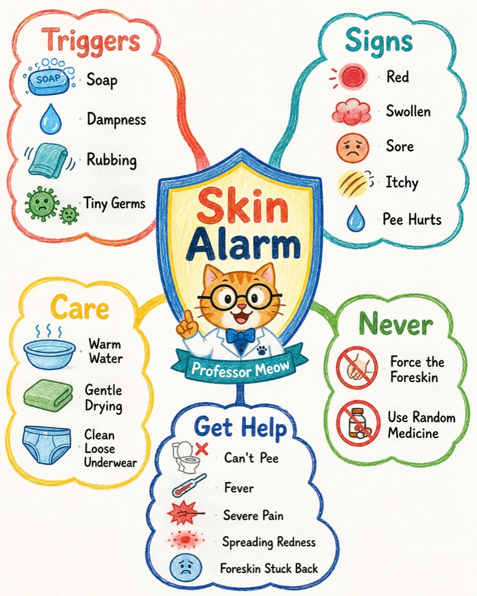

小鸡鸡为什么会发炎？
兔兔发现了一个很棒的谜题：它明明有包皮这扇保护门，为什么有时还会红、肿、痒或者痛呢？
喵呜，宇宙的奥秘就在小猫的爪子尖上。今天我们不怕羞，也不乱猜，去看看身体城堡里的警报器。
第一关：认识身体城门
在我们的世界里，那其实是身体城堡一小块柔软皮肤拉响了“发炎警报”。
小鸡鸡前端叫龟头，外面常有一层叫包皮的软软保护门。这一带皮肤比较薄、比较敏感。很多小朋友的包皮还不能完全翻开，这是成长中的常见情况，不用硬拉开。

第二关：谁按响了警报？
最常见的捣乱按钮，不一定是小病菌。香皂、沐浴露、泡泡浴的残留，尿液或汗水带来的潮湿，紧内裤的摩擦，反复摸、抓或硬拉包皮，都可能让软皮肤觉得受伤。
于是警报猫发出信号，守卫猫赶来，附近的小血管把更多血液送到这里。外面就会看见红、热、肿、痒、痛。尿液经过受刺激的皮肤时，还可能像水碰到小擦伤一样疼。

第三关：病菌一定是坏蛋吗？
皮肤上本来就住着少量微小居民。平时城门完整、干爽，它们通常不会闹事。可是皮肤被抓破、硬拉出小裂口，或长时间又暖又湿时，一些细菌或真菌可能增多，让警报更响。
所以正确的因果路线是：刺激或小损伤 → 皮肤发出警报 → 守卫队集合 → 红肿疼痛；有时病菌也会加入，但不是每次都有。

第四关：兔兔的通关动作
发现红、肿、痒、痛时，第一步不是自己偷偷解决，而是马上告诉妈妈、爸爸或其他可信任的大人。这就像游戏里呼叫队友。
- 只用温水轻轻清洗外面，不要继续用香皂、沐浴露、泡泡浴或湿巾刺激。
- 轻轻拍干，换上干净、宽松的内裤。
- 不要硬翻包皮。已经能自然翻开的，也只到不疼的位置；发炎时不要反复翻动。
- 不要自己涂药。抗生素、抗真菌药、激素药各管不同情况，要让医生来选。

这些是“立即求助”信号
下面任何一种出现，都要马上告诉大人，由大人尽快联系医生；尿不出来、只能滴几滴，或包皮翻到后面卡住回不来，需要紧急就医：
- 尿不出来、尿很少或尿时很痛
- 疼得厉害，肿得很快，颜色变深
- 发烧、精神很差，或红肿沿着小鸡鸡向上扩散
- 有脓样分泌物、出血或难闻气味
- 包皮翻到后面，卡住不能盖回来
- 反复发作，或温和照护后仍没有好转
如果兔兔现在就有这些症状，这篇故事不能代替医生检查。先告诉 King，一起去看儿科、泌尿外科或急诊。
兔兔的设计图任务
把身体城堡画成一张小游戏地图，画三类卡牌：
然后试着改变一个条件：如果没有病菌，只有泡泡浴，警报会不会响？会，因为刺激本身就能让皮肤发炎。如果保持温和、干爽、不硬拉，警报被按响的机会通常会变少。
一张图收好全部线索
